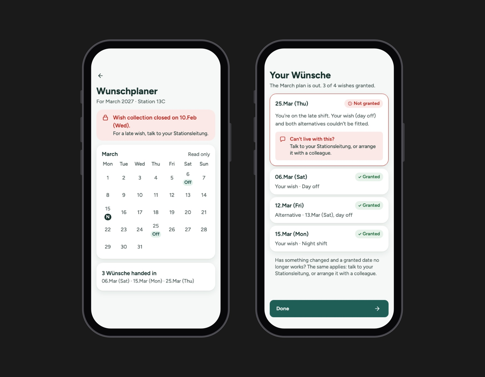

Healthcare · 2026
SpringIn
An AI-assisted design sprint on how nurses ask for time off
Problem
SpringIn started with a guess: nurses in German hospitals lose their time off because of how duty rosters are made, through late plans, changes after publication and calls on days off. Before designing anything, I ran a design sprint to find out whether scheduling was really where the problem started, and for whom.
Research
I interviewed registered nurses, including a float pool nurse and a nurse who is rarely called in, and the ward managers who build the rosters. I followed up in writing, and added desk research on German rostering rules and national staffing data. Every hypothesis had written criteria for what would support or contradict it.
- 5Participants
- 8Hypotheses tested
- 14Concept directions
The founding guess mostly didn't hold. Most wishes for days off were granted, and participants traced roster trouble back to too few staff more than to how the plan was made.
How I worked with AI
I ran the sprint with Claude as a research and design partner. Custom skills drafted the research frame, affinity map, insight statements, problem frames and the strategy-to-skeleton layers, and every AI synthesis was flagged for my review before it moved forward. I made each call and logged it, with the reason, in a decision log. I built the prototype in Claude Design.
Insight
A high approval rate hides the wishes nobody writes down.
"I don't write all of them, because there are also other colleagues with family, and our head nurse has to consider them also."
Making
Reframing twice before the final design
My first frame, paper shift swaps that reach the system only at month end, got as far as a wireframe, and it felt underwhelming, so I went back to the research. The second frame, helping the ward manager find someone to cover, didn't give nurses any more control over their own schedule, so I paused it. The third put the nurse at the center: she leaves some wishes unwritten out of consideration for colleagues. I chose it because both of its claims trace to a participant's own words, and design can reach it without more staff.
A wish with room to move
Each wish can carry up to two alternatives, or be marked as fixed, instead of adding more wishes or fairness rules, which are agreed with the works council and sit outside the design. The nurse held wishes back so her head nurse would have less to weigh. A wish with alternatives gives the head nurse options instead of one more constraint.

Honest about what a wish is
The app says plainly that a wish is not a promise, shows no approval status before the plan is out, and keeps colleagues' wishes private, since they're personal data. When a round has closed or a wish isn't granted, it points to talking to the head nurse or a colleague, which is what wards already do, instead of inventing a feature for it.


Outcome
I delivered a clickable prototype covering the whole wish round, a design rationale that traces every decision to its source, and an implementation document for handoff.
It hasn't been tested yet, and the frame rests on one nurse's words. Next I'd test it with more ward nurses, and with a head nurse to find out whether wishes with alternatives are actually easier to fit into the plan.
.say hello
Hiring a product designer who brings AI into the process? Let's talk.
mark.albaran [at] outlook.com
LinkedIn (opens in a new tab)